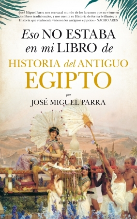

Eso no estaba en mi libro de Historia del Antiguo Egipto
Reseña por Jorge I. Zuluaga

Ver detalles · Ver reseña en GoodReads (necesita cuenta)
He leído en estos últimos meses un puñado de libros de egiptología después de que un excelente curso con la egiptóloga colombiana Elizabeth Noreña (¡recomendado todo lo que hace; gran divulgadora!) me despertara nuevamente una pasión por el antiguo Egipto que tenía dormida desde mi juventud; aun así, no deja de sorprenderme, con cada libro que leo, lo inagotable que parece ser el Egipto de los faraones.
Pero tampoco debería causarme ninguna sorpresa.
Estamos hablando del país más antiguo del mundo, una sociedad organizada de la antigüedad que mantuvo sus tradiciones culturales y religiosas por un increíble período de tiempo (casi 3.000 años) mientras veía emerger y desaparecer grandes culturas e imperios a su alrededor en Mesopotamia, el Levante, Grecia, Roma y hasta en las lejanas India y China. Algunas de esas sociedades, que hoy admiramos profundamente, fueron poderosamente influenciadas por este pueblo, un regalo del Nilo. ¿Por qué sorprenderse, entonces, con el hecho de que Egipto no se agote en 2 o 10 libros?
Aun así, para alguien que no es profesional de la egiptología como yo, el antiguo Egipto, o por lo menos la versión a la que podemos acceder sin muchos conocimientos, podría realmente agotarse después de un par de libros. O al menos eso pensaba yo.
¡Craso error!
Egipto, incluso para el aficionado (o tal vez aún más para el aficionado), parece realmente inagotable.
Así lo demuestra justamente este librito. Que de "ito" no tiene nada, excepto lo "delicioso".
Con sus más de 450 páginas (al menos en la edición en la que lo leí), "Eso no estaba en mi libro de Historia del Antiguo Egipto" es una hilarante colección de ensayos muy bien escritos sobre aspectos "fuera del molde" de la sociedad del País de la Tierra Negra y la Tierra Roja.
Como lo promete su título, los temas que aborda son poco convencionales: "¿cómo es excavar una tumba en Egipto?" (una descripción, para los no profesionales, del "verdadero" día a día de un o una profesional de la egiptología en una excavación; menos glamuroso de lo que nos imaginamos); "Mira: una reina" (una detallada relación de algunas de las reinas que tuvo el antiguo Egipto, una sociedad que trató mejor a las mujeres que muchas de las sociedades que existieron en su tiempo, que han existido desde entonces e incluso que existen en el presente); "el barco funerario de Jufu" (la increíble historia del descubrimiento, restauración y exposición de uno de los barcos del faraón que construyó la más grandiosa pirámide de la antigüedad y cinco barcos completamente funcionales para que lo acompañaran en su viaje por la Duat y a través del cuerpo de Nut); "el tabaquismo de Ramsés" (una aventura policíaca para descubrir cómo demonios llegó tabaco, una planta americana, a los pulmones de un rey africano). Y más, mucho más.
Por tratarse de un libro de divulgación, y más aún por tratarse de un libro con un título entre divertido y superficial, pensaría uno que los ensayos del texto son más bien ligeros, tal vez sin el rigor de verdaderos textos de egiptología o textos de divulgación de buen nivel. Pero no. Me sorprendió descubrir que las descripciones, los datos y los métodos mencionados en los ensayos son bastante más rigurosos de lo que esperaría por el título (bueno, de lo que puedo juzgar sin ser egiptólogo). Así que los lectores más nerds, hombres y mujeres, descubrirán en este un libro entretenido y riguroso a la vez.
El libro comienza un poco lento y con algunos temas que pueden parecer pesados. De haber sido editor, habría aconsejado comenzar con temas más "pop". De modo que, si definitivamente le van a "meter el diente", tengan paciencia con los primeros dos o tres ensayos. Para mí, el libro se pone realmente entretenido a partir del capítulo 4, "Cuerpos embalsamados". Tal vez los lectores más pragmáticos podrían comenzar allí la lectura y dejar los primeros tres ensayos para después.
Me encantó conocer a través del libro la historia detallada de Sinuhé, el egipcio, el verdadero. No he leído el texto original (a pesar de mi renovada "goma" por Egipto), pero conocer la síntesis que prepara José Miguel Parra, el autor del libro, me dejó animado para buscar la historia completa; pero, aún mejor, me informó lo suficiente para entender la importancia de este texto del Reino Medio en la historia de la literatura del antiguo Egipto y entender algunas referencias que hacen de él otros libros de divulgación egiptológica. Fue como leer un resumen de la Ilíada y la Odisea sin leer a Homero (¡pero hay que leer a Homero y a... Sinuhé!).
En resumen, "Eso no estaba en mi libro de Historia del antiguo Egipto" termina siendo una lectura obligada para cualquier #KemetLover que disfrute de un descanso en medio de lecturas más sesudas y estructuradas sobre el fantástico y desaparecido País de las Dos Tierras. Pero también es una buena lectura para quienes les guste la historia, así no tengan un interés particular en el antiguo Egipto, y quieran pegarse un "duchazo" de buenos datos e historias fuera del molde sobre esta increíble sociedad de la antigüedad.